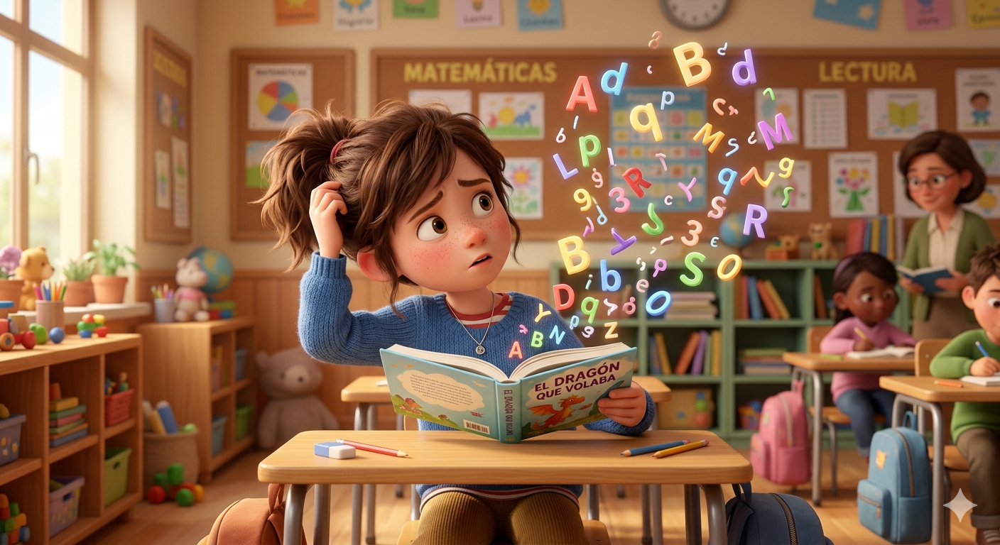
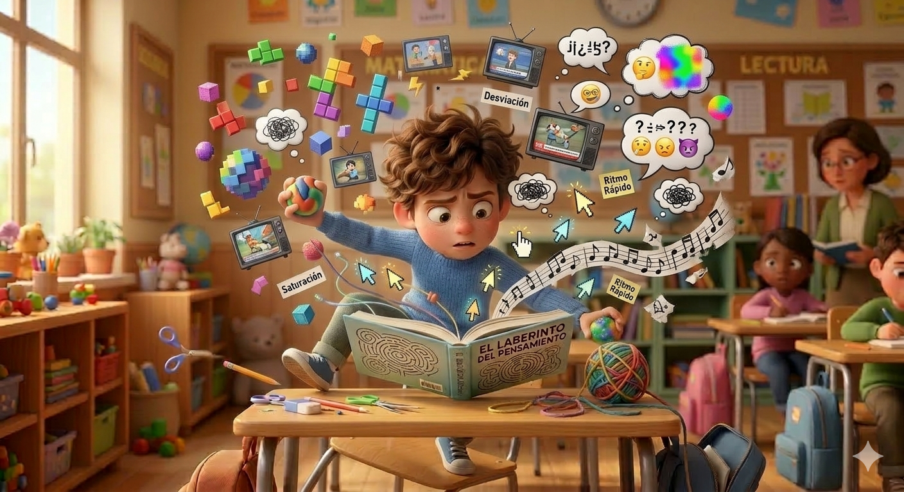
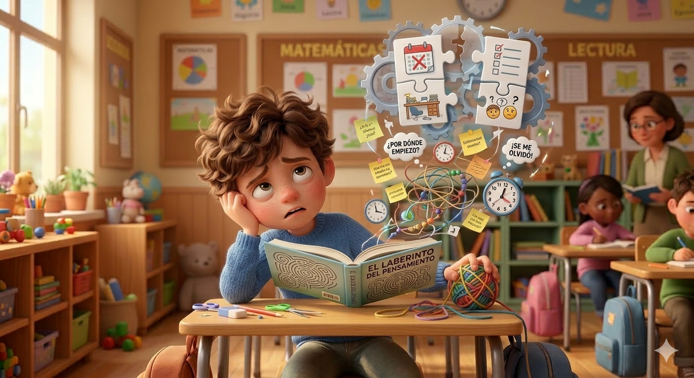

Recursos esenciales para comprender y apoyar a tu alumnado

📖
'">
Guía: Dislexia
Qué es, señales de alerta por curso y 6 estrategias que puedes aplicar mañana en clase.
Ver guía completa →

⚡
'">
Guía: TDAH
Señales de alerta y herramientas prácticas de gestión. El movimiento no es capricho, es necesidad.
Ver guía completa →

🧩
'">
Guía: Funciones Ejecutivas
Planificación, organización y autorregulación. El "director de orquesta" del cerebro.
Ver guía completa →
Guía para docentes · CLP Neuroeducación
Dislexia, Disgrafía y Disortografía
Tres formas de la misma dificultad — señales y estrategias para cada perfil
ℹ️ Esta guía no es un diagnóstico. Es una herramienta de orientación para docentes. Si observas varios indicadores en un alumno/a, contacta con orientación para una evaluación especializada.
¿Qué son las DEA de la lectoescritura?
La dislexia, la disgrafía y la disortografía son dificultades específicas del aprendizaje (DEA) de origen neurobiológico que afectan a diferentes dimensiones de la lectura y la escritura. Con frecuencia aparecen juntas en el mismo alumno/a, aunque pueden darse de forma independiente.
No son falta de inteligencia, pereza ni mala educación. Son el resultado de un procesamiento neurológico diferente que necesita apoyos específicos, no más esfuerzo del mismo tipo.
10–15% del alumnadoSuelen coexistirCon apoyo → éxito académico plenoOrigen neurobiológico
Los 3 perfiles de dificultad
📖
Perfil 1 · Dificultad lectora
Dislexia
Decodificación fonológica
Afecta a la precisión y fluidez lectora: la dificultad está en reconocer y descifrar palabras escritas, no en la comprensión en sí. El alumno/a entiende si le lees en voz alta; el problema es acceder al texto.
🔍 Señales en el aula
📚 Confunde letras similares: b/d, p/q, m/n
🐌 Lectura lenta, vacilante, sin fluidez
↩️ Salta palabras o líneas al leer
😰 Evita o rechaza leer en voz alta
💤 Fatiga intensa tras lectura breve
🎧 Entiende bien si se le lee en voz alta
✅ Estrategias clave
📏 Regla de lectura (cartulina pastel con ventana)
🗣️ Lectura coral o eco — nunca en voz alta sin preparar
📤 Enviar textos el día anterior
🎯 Pre-enseñar vocabulario clave del texto
🎧 Audiolibros y texto leído en voz alta
🖥️ Fuente OpenDyslexic, interlineado 1.5
❌ Dejar de hacer: Pedir leer en voz alta sin preparación · Medir velocidad lectora públicamente · Decir "es que no le gusta leer"
✏️
Perfil 2 · Dificultad grafomotora
Disgrafía
Trazo y escritura manual
Afecta a la calidad del trazo y la escritura manual: la letra es ilegible, irregular o desproporcionada, no por descuido sino por dificultad neuromotora en la coordinación fina. Puede acompañar a la dislexia o aparecer de forma independiente.
🔍 Señales en el aula
✍️ Letra muy irregular, ilegible o variable
🤏 Agarre inadecuado o rígido del lápiz
📐 No respeta renglones ni márgenes
🔄 Letras de tamaño muy variable
😓 Escritura muy lenta y con esfuerzo visible
🔀 Mezcla mayúsculas y minúsculas sin razón
✅ Estrategias clave
✏️ Lápiz triangular o adaptador de agarre
📄 Papel pautado con líneas gruesas o doble pauta
💻 Permitir uso del teclado siempre que sea posible
📸 Fotografiar la pizarra en lugar de copiar
⏰ Tiempo extra en toda tarea escrita
🎯 Evaluar el contenido, no la presentación
⚠️ Importante: La letra ilegible no es descuido ni falta de cuidado — es el resultado de una dificultad neuromotora real. Penalizarla en la nota desconecta el esfuerzo del resultado y destruye la motivación.
🔤
Perfil 3 · Dificultad ortográfica
Disortografía
Reglas y ortografía
Afecta a la aplicación de reglas ortográficas y al recuerdo de la forma correcta de las palabras. El alumno/a comete errores sistemáticos aunque conozca las reglas — el problema no es saber la norma, sino aplicarla automáticamente durante la escritura.
🔍 Señales en el aula
❓ Confunde b/v, g/j, h (ortografía arbitraria)
✂️ Une o separa palabras incorrectamente
🔡 Omite o añade letras dentro de palabras
📝 Faltas en palabras frecuentes trabajadas
🔁 Los mismos errores se repiten siempre
🧩 Sabe la regla si se le pregunta, pero no la aplica
✅ Estrategias clave
📦 Banco personal de palabras (palabra + imagen + frase)
✍️ Método V-A-K-M: ver · escuchar · tocar · escribir
🔴 Señalar solo 2-3 errores prioritarios, no todos
🏆 Separar nota de contenido y nota de ortografía
🔁 Repaso espaciado: misma palabra en 3 contextos
💻 Correctores ortográficos como herramienta habitual
❌ Dejar de hacer: Copiar 20 veces la misma palabra — no funciona neurológicamente. Corregir todo en rojo reduce la autoestima sin mejorar la ortografía. El aprendizaje ortográfico requiere método multisensorial y repetición espaciada.
Señales de alerta por curso
📅 Evolución por etapa
1-2
1º–2º: Confusión b/d/p/q, rechazo a leer en voz alta, escritura en espejo, agarre inadecuado del lápiz, no respeta renglones
3-4
3º–4º: Lectura lenta y vacilante, fatiga al leer, letra ilegible o muy variable, ortografía natural deficiente aunque conoce las reglas
5-6
5º–6º: Rendimiento oral muy superior al escrito, evita escribir, producción escrita corta y con muchas faltas, baja autoestima académica acumulada
🌟 Recuerda: En estos perfiles el rendimiento oral es siempre muy superior al escrito. Una evaluación oral revela el conocimiento real del alumno/a mucho mejor que un examen escrito.
Estrategias comunes a los 3 perfiles
⏰ Tiempo extra automático
+25% en tareas escritas, +50% en lecturas largas. Comunicar en privado: "Tú tienes hasta las 11:30". Anticipar siempre, no esperar a que no llegue.
🗣️ Evaluación oral alternativa
Permite responder oralmente cuando la barrera es la lectura o la escritura. El conocimiento es el mismo — la forma de demostrarlo puede ser diferente.
💻 Tecnología como acceso
Teclado, corrector, audiolibros, texto a voz. No son ventajas — son rampas de acceso. En la vida adulta todos usamos estas herramientas sin penalización.
🎯 Separar contenido de forma
Evalúa lo que sabe, no cómo lo escribe. Una nota específica para ortografía/presentación, otra para contenido. El alumno/a puede saber mucho y escribir con dificultad.
📤 Anticipar materiales
Envía textos, esquemas y vocabulario el día anterior. El acceso anticipado reduce la carga cognitiva durante la clase y permite que la atención vaya al aprendizaje.
🏆 Refuerzo del esfuerzo
Celebra el proceso, no solo el resultado. "Has leído toda la página" vale más que la nota. La autoestima lectora se reconstruye despacio y con mucho refuerzo positivo.
🔑 Clave: La dislexia, disgrafía y disortografía no desaparecen, pero con los apoyos adecuados el alumnado puede alcanzar el éxito académico completo. Lo que cambia es la forma de acceder al conocimiento, no la capacidad de aprenderlo.
❌ Evitar con cualquier perfil
Copiar 20 veces la misma palabra — no consolida ortografía, genera frustración
Pedir leer en voz alta sin preparación previa
Corregir todos los errores en rojo (seleccionar 2-3 prioritarios)
Comparar velocidad lectora o producción escrita con el grupo
Penalizar la letra o la ortografía en la nota de contenido
Decir "si se esforzara más..." — el esfuerzo ya es enorme e invisible
¿Quieres más estrategias?
Accede al banco completo de Estrategias DUA en la sección correspondiente, o consulta con Carlota directamente.
Tres perfiles, señales por curso y estrategias para cada tipo
ℹ️ Esta guía no es un diagnóstico. Es una herramienta de orientación para docentes. Si observas varios indicadores en un alumno/a, contacta con orientación para una evaluación especializada.
¿Qué es el TDAH?
El TDAH (Trastorno por Déficit de Atención e Hiperactividad) es un trastorno del neurodesarrollo de origen neurobiológico que afecta al funcionamiento del córtex prefrontal — la zona del cerebro responsable de la atención, la planificación y el control de impulsos.
No es mala educación. No es falta de voluntad. No es pereza. El cerebro con TDAH funciona de forma diferente y necesita estructura, movimiento y comprensión para rendir.
5–7% del alumnado3 subtipos distintosEl movimiento es regulación neurológicaMuy infradiagnosticado en niñas
Los 3 subtipos del TDAH
🌧️
Subtipo 1
TDAH Inatento (TDA)
Más frecuente en niñas
Predominan las dificultades de atención sin hiperactividad visible. Es el perfil que más se pasa por alto porque el alumno/a "no da problemas".
🔍 Señales en el aula
🌫️ "Sueña despierto/a", parece no estar
📝 Empieza tareas pero no las termina
🔁 Pierde el hilo en explicaciones largas
📦 Pierde materiales con frecuencia
🎧 Parece no escuchar aunque mira
🔀 Cambia de tarea sin terminar la anterior
✅ Qué ayuda
Señales discretas de reconexión (toque hombro)
Tareas fragmentadas en pasos muy cortos
Revisar agenda y materiales juntos
Sentarle cerca del docente
Instrucciones breves + repetición
Tiempo extra en todos los trabajos
⚠️ Ojo: Muchas niñas con TDAH inatento no se diagnostican hasta adultas porque compensan con esfuerzo extra y ansiedad. El bajo rendimiento no siempre va acompañado de conducta disruptiva.
⚡
Subtipo 2
TDAH Hiperactivo-Impulsivo
Más visible en niños
Predomina el exceso de movimiento y la impulsividad sin grandes problemas de atención sostenida. Es el perfil más visible y el que genera más llamadas de atención en clase.
🔍 Señales en el aula
🏃 No puede estar quieto: se levanta, se mueve
🗣️ Habla sin parar, interrumpe constantemente
✋ Contesta antes de que termines la pregunta
🎲 Dificultad para esperar turno
💥 Reacciones emocionales intensas y rápidas
🤝 Interfiere en las actividades de otros
✅ Qué ayuda
Rincón activo con fidgets y herramientas de movimiento
Pausas de movimiento reguladas (cada 15-20 min)
"Recadero oficial": tareas con movimiento
Rutinas muy claras y predecibles
Anticipar cambios: "en 5 min cambiamos"
Refuerzo positivo inmediato y específico
⚠️ Ojo: El movimiento no es desobediencia — es regulación neurológica. Castigar quitando el recreo o el movimiento empeora la situación y aumenta la desregulación.
🌊
Subtipo 3 · más frecuente
TDAH Combinado
~70% de los casos
Presenta síntomas significativos de los dos subtipos anteriores: inatención + hiperactividad + impulsividad. Es el subtipo más diagnosticado y el que genera mayor impacto en el aula.
🔍 Señales en el aula
Combina todas las señales de ambos perfiles
Rendimiento muy variable según el día y la hora
Sabe el contenido pero no puede demostrarlo
Fatiga emocional intensa: el esfuerzo es enorme
Baja autoestima académica acumulada
✅ Qué ayuda
Combinar estrategias de los dos subtipos
Estructura muy clara + movimiento regulado
Tutorías breves y privadas para ajustar apoyos
Comunicación fluida con la familia
Celebrar los avances, aunque sean pequeños
💡 Clave: En el tipo combinado la fatiga del alumno/a es máxima — están usando toda su energía en autocontrolarse. Un clima de aula seguro y predecible es tan importante como cualquier estrategia específica.
Señales de alerta por curso
📅 Evolución por etapa
1-2
1º–2º: No permanece sentado, habla constantemente, pierde materiales, impulsividad al contestar, lloros frecuentes ante la frustración
5º–6º: No termina exámenes, "soñar despierto", trabajo muy variable, baja autoestima académica, evitación de tareas escritas
🌟 Los superpoderes del TDAH: creatividad desbordante, hiperfoco en lo que les apasiona, pensamiento lateral, empatía intensa, energía inagotable. El reto es crear el contexto donde brillen.
Estrategias generales para todos los perfiles
📍 Ubicación estratégica
Primera fila, lejos de ventana y puerta. Cerca del docente. Entre compañeros tranquilos. Con la espalda contra la pared si es posible.
🤫 Señales discretas
Toque en el hombro al pasar · Tarjeta verde (bien) / amarilla (revisa) · Código visual acordado en privado. Nunca correcciones en público.
✅ Checklist de pasos
En lugar de "haz los deberes": 8 pasos concretos. Plastificar con rotulador borrable. El checklist externaliza la memoria de trabajo.
🏃 Rincón activo
Pelota de estrés, banda elástica en silla, fidgets silenciosos. Uso libre, sin pedir permiso. 2–3 min. El movimiento ES regulación.
⏰ Temporizador visual
Que vea cuánto queda, no cuánto ha pasado. El TDAH tiene mala percepción del tiempo. Time Timer o reloj de arena sobre la mesa.
🏆 Refuerzo positivo 3:1
Por cada corrección, 3 elogios específicos e inmediatos. "Has levantado la mano antes de hablar" — de proceso, no de resultado.
🔑 Clave: El TDAH no es un problema de actitud. Es un funcionamiento diferente del cerebro. Conocer el subtipo de cada alumno/a permite ajustar las estrategias con precisión — no todos necesitan lo mismo.
❌ Evitar siempre (con cualquier subtipo)
"Si quisieras, podrías" — el esfuerzo ya está al máximo
Castigar quitando el recreo o el movimiento (aumenta la desregulación)
Comparar con hermanos o compañeros
Correcciones en voz alta delante del grupo
Ignorar el perfil inatento porque "no da problemas"
Considerar que el diagnóstico es excusa o invento de la familia
¿Quieres más estrategias?
Accede al banco completo de Estrategias DUA en la sección correspondiente, o consulta con Carlota directamente.
Planificación, organización y autorregulación — el director de orquesta del cerebro
ℹ️ Esta guía no es un diagnóstico. Es una herramienta de orientación para docentes. Si observas varios indicadores en un alumno/a, contacta con orientación para una evaluación especializada.
¿Qué son las funciones ejecutivas?
Las funciones ejecutivas son las habilidades mentales de orden superior que permiten planificar, organizarse, controlar impulsos, mantener la atención y regular las emociones. Son el sistema de gestión del cerebro: el "director de orquesta".
Residen principalmente en el córtex prefrontal, que no madura completamente hasta los 25 años. Por eso muchas dificultades de organización en Primaria no son descuido ni mala actitud — es el cerebro que aún está madurando.
Maduración hasta los 25 añosApoyo externo = compensaciónTrainable con práctica
Las 6 funciones ejecutivas clave
🗺️
Planificación
Anticipar pasos, crear un plan antes de actuar
🗂️
Organización
Gestionar materiales, información y tiempo
🎯
Inicio de tarea
Activarse y comenzar sin bloquearse
🧠
Memoria de trabajo
Mantener información activa mientras se usa
⏰
Gestión del tiempo
Estimar y controlar el tiempo empleado
❤️
Regulación emocional
Controlar respuestas emocionales ante el reto
Señales de dificultad
🔍 Qué observas en el aula
1
Olvida materiales constantemente · Mochila y mesa siempre desorganizadas
2
Se bloquea ante tareas largas: no sabe por dónde empezar, aunque sabe el contenido
3
Pierde el hilo en instrucciones de 3 pasos o más
4
No estima bien el tiempo (cree que terminará en 5 min algo de 30)
5
Dificultad para autorregular emociones: explosiones o llanto ante la frustración
6
Agenda sin rellenar · No copia deberes · No sabe qué estudiar para el examen
Estrategias: aplícalas mañana
✅ Checklist plastificado
Lista de pasos para inicio Y fin de clase, en la mesa. Escribir con rotulador borrable. Incluye: sacar materiales, copiar deberes, revisar mochila antes de salir.
📦 Caja "todo a la vista"
Bandeja o caja en la mesa con TODO el material del día. Si no está a la vista, no existe. Evita el caos de la mochila.
🎨 Código de colores
Un color por asignatura: cuaderno azul, carpeta azul, funda azul para mates. Reduce la decisión y el esfuerzo de organizar.
✂️ Fragmenta las tareas
"Primero lee. Luego subraya. Después responde." Nunca "haz el ejercicio". Cada microacción es un pequeño éxito.
⏰ Temporizador visible
Timer o reloj de arena en la mesa. "Tienes 15 min para esta parte." Avisa 5 min antes. El tiempo abstracto no existe para ellos.
📋 Revisión final conjunta
Los 5 últimos min de clase: revisamos agenda juntos. "¿Qué hay para mañana?" No depender solo de que lo haga en casa.
🔑 Clave: Las funciones ejecutivas se pueden entrenar con práctica deliberada. Mientras tanto, la organización externa (apoyos, checklists, materiales visuales) compensa la dificultad interna. No es hacer las cosas por ellos — es poner andamios mientras el cerebro madura.
💬 Las 3 preguntas que más ayudan
1
¿Cuál es el primer paso? — Ayuda a arrancar cuando están bloqueados. Solo el primer paso, no todos.
2
¿Cuánto tiempo crees que te queda? — Desarrolla la conciencia del tiempo. Sin corregir, solo preguntar.
3
¿Qué necesitas para mañana? — Al final de clase, como rutina sistemática, no como recordatorio de emergencia.
¿Quieres más estrategias?
Accede al banco completo de Estrategias DUA en la sección correspondiente, o consulta con Carlota directamente.
ℹ️ Instrucciones: Este checklist no es un diagnóstico. Es una herramienta de detección precoz para identificar alumnado que podría beneficiarse de evaluación especializada o adaptaciones en el aula. Marca los indicadores que observas con frecuencia.
Selecciona el curso del alumno/a:
1º Primaria
2º Primaria
3º Primaria
4º Primaria
5º Primaria
6º Primaria
Indicadores marcados: 0
📊 Interpretación de Resultados
Suma de indicadores marcados:
6 o más indicadores: Comenzar con medidas de apoyo en el aula e informar a orientación.
10 o más indicadores: Recomendar evaluación especializada manteniendo las medidas de apoyo.
RD 157/2022 — Medidas de atención a diferencias individuales
Comunidad de Madrid — Instrucciones de inicio de curso (Consejería de Educación)
🧠 Brain Gym®
Ejercicios de movimiento para optimizar el aprendizaje
Ejercicios Individuales
💧
Agua
Hidratación consciente. El cerebro es 80% agua. Fundamental para la concentración.
🔘
Botones del Cerebro
Ejercicio propioceptivo que permite el cruce de la línea media visual y mejora la atención.
🚶
Marcha Cruzada
Mejora la comunicación entre los hemisferios cerebrales. Fundamental para la lectura y la escritura.
🙏
Gancho
Ideal para exámenes y vuelta a la calma. Reduce ansiedad y mejora concentración.
♾
Ocho Perezoso
Coordinación ojo-mano y seguimiento visual. Mejora la lectura y la escritura.
🎩
Gorras de Pensar
Estimulación auditiva y activación. Masaje suave de las orejas de arriba hacia abajo.
Rutinas PACE
🌅
Inicio del Día / Después de Descanso
Secuencia: Agua → Botones del Cerebro → Marcha Cruzada → Gancho Duración: 4 minutos Cuándo: Al llegar, después del recreo
📖
Antes de la Lectura
Secuencia: Agua → Botones del Cerebro → Ocho Perezoso Duración: 3 minutos Cuándo: Antes de tareas de lectoescritura
🔢
Antes de Matemáticas
Secuencia: Gorras de Pensar → Marcha Cruzada → Gancho (si hay mucho estrés) Duración: 3 minutos Cuándo: Antes de resolver problemas
🌙
Final del Día
Secuencia: Gancho → Gorras de Pensar Duración: 2 minutos Cuándo: Antes de salir, para cerrar y calmar
Práctica Guiada Personalizada
Selecciona los ejercicios que quieres practicar. El tiempo total se calculará automáticamente:
💧 Agua (1 min)
🔘 Botones del Cerebro (1 min)
🚶 Marcha Cruzada (1 min)
🙏 Gancho (1 min)
♾ Ocho Perezoso (1 min)
🎩 Gorras de Pensar (1 min)
⏱ Tiempo total: 0 minutos
Preparando...
1:00
⏱ Temporizador Pomodoro
Técnica de gestión del tiempo para mejorar concentración
FASE: TRABAJO 🎯
20:00
⚙️ Personalizar tiempos
Plantillas Rápidas
Pomodoro Clásico
20 min trabajo / 5 min descanso / 15 min pausa larga cada 4 ciclos
Primaria Baja (1º–3º)
15 min trabajo / 3 min descanso / 10 min pausa larga cada 3 ciclos
Primaria Alta (4º–6º)
20 min trabajo / 4 min descanso / 12 min pausa larga cada 3 ciclos
🔢 Regla Numérica
Herramienta visual para sumas y restas — ideal para alumnado con discalculia
💡 Cómo usar: Elige el rango de números, introduce una operación y pulsa Calcular para ver los saltos animados sobre la recta. Pulsa 🖨️ para imprimir la recta en limpio.
→ Resultado:⚠️ Resultado fuera del rango visible
Número de inicio Saltos Resultado final
📋 Para usar en el aula
✋
Método de saltos
Di en voz alta cada salto mientras se anima: "Uno, dos, tres, cuatro..." El movimiento visual + auditivo refuerza la operación en la memoria.
📄
Versión imprimible
Pulsa 🖨️ para imprimir la recta en limpio, sin botones. Plastifícala y colócala en la mesa. El alumno/a puede escribir con rotulador borrable.
🎯
Rango -10 a 10
Usa el rango negativo para introducir los números enteros en cursos superiores (5º-6º). La visualización hace evidente por qué -3 + 5 = 2.
💡 Estrategias DUA
Diseño Universal para el Aprendizaje — estrategias adaptadas a diferentes perfiles
🎨
QUÉ aprendemos
Representación
Presenta la información en múltiples formatos: visual, auditivo y manipulativo
🛠
CÓMO lo hacemos
Acción y Expresión
Permite responder de formas diferentes: oral, escrito, visual o digital
❤️
POR QUÉ aprendemos
Implicación
Conecta con los intereses del alumnado y celebra el progreso individual